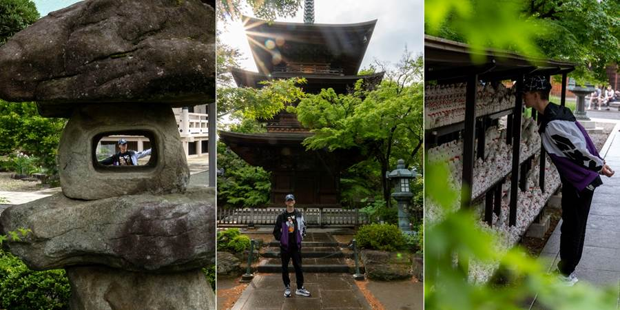

Dan šesti: Hram Srećne mačke
Kristina kaže, sve što smo probali je lepo (od hrane). I tako je.
Danas smo išli do hrama Srećne mačke, malo dalje od centra Tokija.
Legenda kaže da je jednog samuraja uhvatio pljusak i sklonio se pod drvo ispred jednog starog, poluraspadnutog hrama u kom je bio siromašni monah koji je jedva imao para sebi za hranu al je hranio i jednu mačku.
Mačka je gledala u samuraja i digla šapicu kao da maše. Bila mu je vrlo zanimljiva i došao je do nje i u tom momentu je grom udario u drvo pod kojim je bio do pre par trenutaka. Praktično mu je mačka spasila život.
Samuraj je dao novac monahu da se hram obnovi i od tada je to hram Srećne mačke gde se prodaju figurice bele mace koja je digla šapu.
Hram je lep, u zelenilu, drveni. Kao što kod nas ima puno sveća, tako kod njih ima puno figura mačaka koje mašu šapicom u različitim veličinama, koje se kupe i ostave tamo za zdravlje, sreću.
U hramu je jedna devojka čula da pričamo srpski pa nam je prišla. Ona je isto Srpkinja, Katarina, i živi u Parizu. Kristina i ona su razmenile kontakte na društvenim mrežama.
Pita ona nas kako nam se sviđa u Japanu a Kristina kaže, svaki dan nas nešto novo oduševi.
Kiša nas uveče dočekala na putu do kuće i omela decu da idu na Arkade da igraju igrice ali su se bar naspavali za sutrašnji izlet.
I u Japanu se vozi levom stranom. Krenulo me. Malta, Kipar, Japan. Moja poslednja putovanja gde se vozi levom stranom.